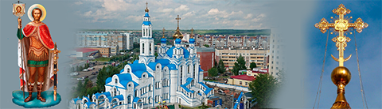

Храм святого благоверного князя
Александра Невского
Казань, ул. Сахарова, 16 Б
Клирики нашего храма

- Настоятель протоиерей Владимир Пономарев
- Родился 10 июня 1973 г. в Казани.
- В1988 г. окончил школу №16. После окончания в 1992 г. Энергетического техникума, поступил в Педагогический Университет, который окончил в 1997 г.
- В декабре 1994 г. рукоположен во диакона, в июне 1997 г. — во пресвитера.
- В 2008 году ко дню Святой Пасхи был возведен в сан протоиерея.

- Священник протоиерей Сергий Хохлов
- Родился dd mmmm 19yy г. в xxxxxx.
- ??????
- В mmmm 19yy г. рукоположен во диакона, в mmmm 19yy г. — во пресвитера.
- Долгое время после окончания Духовной школы протоиерей Сергий был регентом архиерейского хора, исполняя преподавательское послушание при Семинарии.

- Священник иерей Вячеслав Тимофеев
- Родился dd mmmm 19yy г. в хххххх.
- ???????
- В mmmm 19yy г. рукоположен во диакона, в mmmm 19yy г. — во пресвитера.
- Служил в храме свв. мцц. Веры, Надежды, Любови и матери их Софии г. Казани.

- Священник иерей Сергий Чернов
- Родился dd mmmm 19yy г. в xxxxxx.
- ????????????
- ????????????
- ????????????

- Диакон Антоний Арташин
- Родился dd mmmm 19yy г. в xxxxxx.
- 18 декабря 1922 г., в день памяти святителя Гурия Казанского, рукоположен в сан диакона.
- ????
- ??????????
{kind=link}